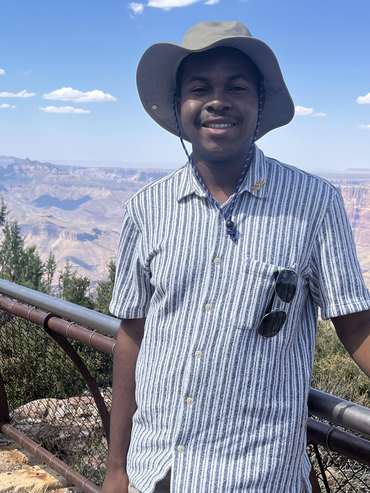

As an environmental engineer, I study electroactive microorganisms that can interact with electricity. Yes, some of them are conductive! How cool are they!

"I am originally from Chesapeake, VA. In the lab, I help to construct and enhance the power output of marine microbial fuel cells with a particular focus on the microbial community within them. I am also interested in improving microbial fuel cell configuration using photosynthetic algae as a potentially more sustainable and efficient method of oxygen supplementation. In my spare time, I enjoy reading, cooking, and going on hikes in the Shenandoah region."
From: Suffolk, VA. "What I want to do with the lab: For my capstone project, titled Microbial Optimization for Crude Oil Degradation in Hydrogen Production Using Microbial Electrolysis Cells, I plan to integrate knowledge from my courses in biotechnology, energy, computing, and environmental science to identify an optimal microbe for breaking down crude oil in hydrogen production."
"I've lived in various places in the US, but I'm most recently from Fairfax, VA. In the lab, I've been working on a project that aims to take waste products, such as food waste, and convert them into more advantageous products using microbial electrolysis technology. I'm interested in the sustainability applications that this research has to tackle contemporary environmental issues. In my free time I love to hike, crochet, and read!"
"I am from Prince William County Virginia, but I was born in Jamaica. My goal is to maximize the efficiency of hydrogen production from biomass by applying biotechnological innovations to transform the waste-to-energy industry. Waste represents untapped potential; thus, achieving zero waste is the optimization of that potential."
Our team is dedicated to pioneering research in electrobiotechnology. We work on innovative solutions in environmental technology, aiming to address sustainability challenges. Our focus areas include bioenergy, wastewater treatment, and microbial electrochemistry.